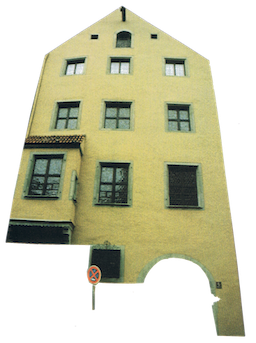

There was no doubt that those insects had not been born spontaneously inside her body. She knew that they came from back there, that all who bore her surname had to bear them, had to suffer them as she did when insomnia held unconquerable sway until dawn.
She still remembered the disquieting face of the great-grandmother who, from her aged canvas, begged for a minute of rest, a second of peace from those insects who there, in the channels of her blood, kept on martyrizing her, pitilessly beautifying her.
It was those very insects who painted that bitter expression, that unconsolable sadness on the faces of her forebears. She had seen them looking out of their extinguished existence, out of their ancient portraits, victims of that same anguish.
Those insects had been born in the womb of the first woman who had had a beautiful daughter. But it was necessary, urgent, to put a stop to that heritage. Someone must renounce the eternal transmission of that artificial beauty.
It was no good for women of her breed to admire themselves as they came back from their mirrors if during the night those creatures did their slow, effective, ceaseless work with a constancy of centuries. It was no longer beauty, it was a sickness that had to be halted, that had to be cut off in some bold and radical way.
She still remembered the endless hours spent on that bed sown with hot needles. Those nights when she tried to speed time along so that with the arrival of daylight the beasts would stop hurting her. What good was beauty like that?